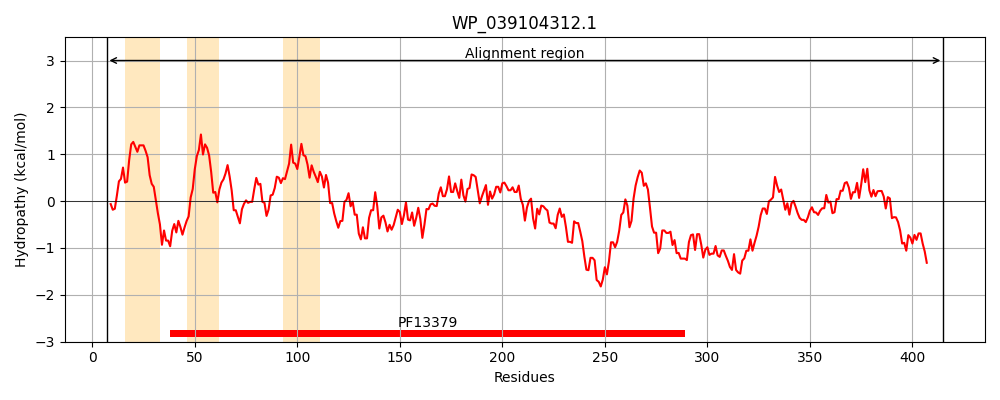
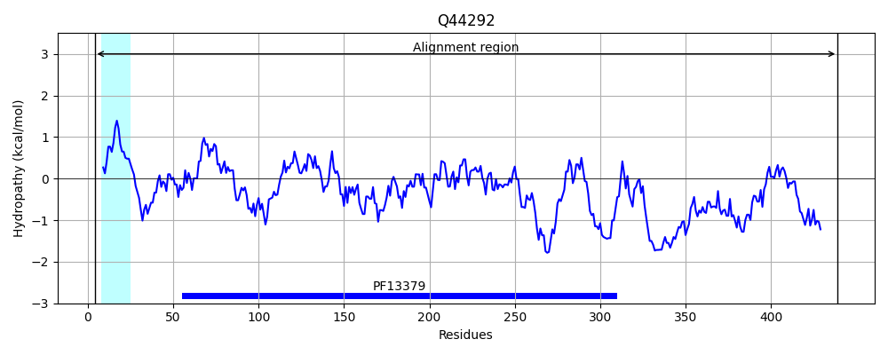
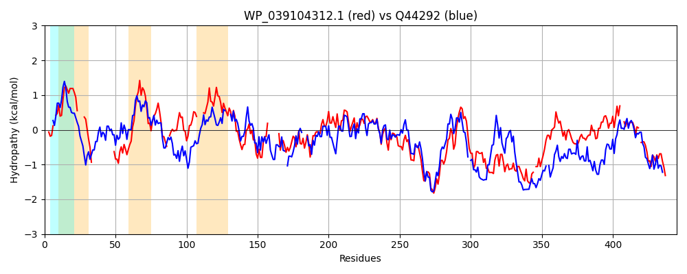

Hit Accession: Q44292
Hit TCID: 3.A.1.16.4
Hit Description: gnl|BL_ORD_ID|13597 gnl|TC-DB|Q44292|3.A.1.16.4 Nitrate transport protein NrtA OS=Nostoc sp. (strain PCC 7120 / UTEX 2576) GN=nrtA PE=3 SV=3
Mach Len: 445
e:0.000000
Query TMS Count : 3
Hit TMS Count: 1
TMS-Overlap Score: 0.650000
Predicted Substrates:None
BLAST Alignment:
Score: 715 , Bit scores: 280 bits, E-value: 2.0e-90, Alignment length: 445, Percentage identity: 37
Query: 7 ISRRRLL-QAGAALGGAMLLPGVM----QAAWAG---------------GSDKPEQTRVRVGFIPLTDCAPLAIAAAKGFDKKYGIT-LVASKEASWAAVRDKLVAGE----LDAAHILYGLLYGLELGIASKPQAMANLMTLNRNGQAITLSSELQE-------KGVTDLGGLKRLIDRSAPGSYTFAHTFPTGTHAMWLYYWLASAGIDPFNDVRTVVVPPPQMVMNMRIGNMSGFCVGEPWNARAINDRIGFTAATSQDIWPEHPEKVLGTRRDWVERNPNTARALVAALMEAQRWIAASPENTQETARLLARRGWLNTKEQYLTGRMLGEYDNGLGRRWQD-AHPMRFWAGGEVSFPWLSDGMWFLTQFRRWGLLKQAPDYLAVASRINRIDVWQAAAQAVG--GISTPAATMRN-STLMDGTVWNGSDPEGYARHFAIQR 415
+SRR+ L GAA ++L+ G Q+A G + K E T+ ++GFIPLTD APL IA KGF KYG+T + K+ SW RD L G +D AHIL + Y + + + M L LN NGQAI+++ + +E K + D +K D+ A TFP GTH +W+ YWLA+ GI+P DV VPPPQMV NM++ + GFCVGEPWNA+ +N +IG++A + ++W +HPEK R+DW+E+NPN A+A++ A++EAQ+W EN +E ++ + R + N + R G D G GR+ Q+ AH M+FWA S+P+ S +WFLT+ RWG L + + +++N+ D+W+ AA+A+G PA++ R T DG ++ PE Y I++
Sbjct: 4 VSRRKFLFTTGAAAAASILVHGCTSNGSQSATTGEQAPSAAPAANVSAANAPKVETTKAKLGFIPLTDAAPLIIAKEKGFFAKYGMTDIEVIKQKSWPVTRDNLKIGSSGGGIDGAHILSPMPYLMTI---NDKVPMYILARLNTNGQAISVAEKFKELNVNLESKSLKD-AAIKAKADKKA---LKMGITFPGGTHDLWMRYWLAAGGINPDQDVVLEAVPPPQMVANMKVNTVDGFCVGEPWNAQLVNQKIGYSALVTGELWKDHPEKAFSMRQDWIEQNPNAAQAILMAILEAQQW-CDKAENKEEMCKICSDRKYFNVAAADIIERAKGNIDYGDGRKEQNFAHRMKFWA-DNASYPYKSHDIWFLTEDIRWGYLPKDTKVQDIVNQVNKEDLWKKAAKAIGVADAEIPASSSRGVETFFDGVKFDPEKPEEYLNSLKIKK 439 | Protein Hydropathy Plots: |
|---|
|  |  |
Pairwise Alignment-Hydropathy Plot:
|
|---|
|  |